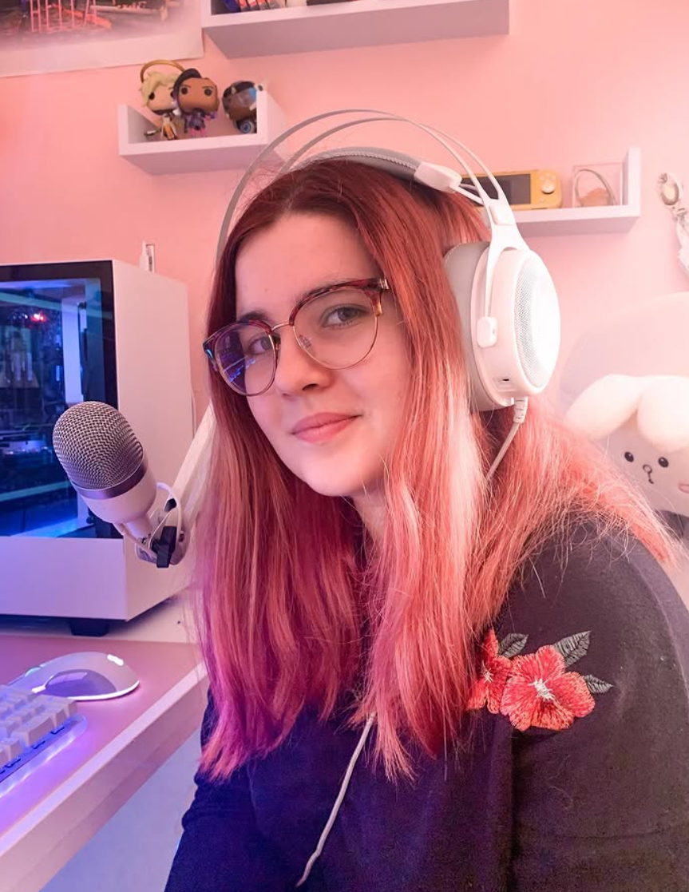

Porque una buena campaña también se escucha.
La voz es uno de los elementos que más influyen en cómo se percibe una marca. Una buena interpretación no solo acompaña a las imágenes: capta la atención, transmite confianza y hace que el mensaje permanezca en la memoria.
Mi formación en Comunicación Audiovisual y Marketing Digital me permite comprender el objetivo de cada campaña y adaptar la interpretación para conectar con el público adecuado. Porque una locución no consiste únicamente en leer un texto, sino en transmitir exactamente aquello que la marca quiere comunicar.
Spots nacionales, regionales y campañas audiovisuales.
Cuñas publicitarias con diferentes estilos de interpretación.
Campañas para YouTube, Spotify y plataformas online.
Contenido publicitario adaptado a Instagram, TikTok y otras plataformas.
Cada campaña necesita una interpretación diferente. Aquí puedes escuchar algunos ejemplos.

Trabajo desde un estudio acondicionado acústicamente y equipado con material profesional para ofrecer un sonido limpio, consistente y listo para su utilización.
Esto me permite adaptarme a cada proyecto y ofrecer grabaciones con la calidad que requiere una producción profesional.
Plazos ágiles adaptados a las necesidades de cada proyecto.
Archivos editados y preparados para incorporarlos directamente a tu producción.
Grabaciones cuidadas y consistentes realizadas desde estudio propio.
Cada marca tiene una historia. Encontrar la voz adecuada es el primer paso para que también sea recordada.